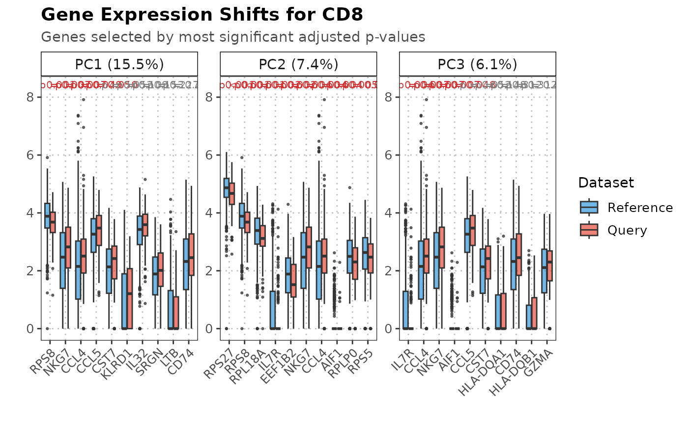

R/calculateTopLoadingGeneShifts.R, R/plot.calculateTopLoadingGeneShifts.R
calculateTopLoadingGeneShifts.RdThis function identifies genes with the highest loadings for specified principal components and performs statistical tests to detect distributional differences between query and reference data.
This function creates boxplots showing expression distributions for top loading genes that exhibit distributional differences between query and reference datasets.
calculateTopLoadingGeneShifts(
query_data,
reference_data,
query_cell_type_col,
ref_cell_type_col,
cell_types = NULL,
pc_subset = 1:5,
n_top_loadings = 50,
p_value_threshold = 0.05,
adjust_method = "fdr",
assay_name = "logcounts",
max_cells = 2500
)
# S3 method for class 'calculateTopLoadingGeneShiftsObject'
plot(
x,
cell_type,
pc_subset = 1:3,
plot_by = c("p_adjusted", "top_loading"),
n_genes = 10,
significance_threshold = 0.05,
...
)A SingleCellExperiment object containing numeric expression matrix for the query cells.
A SingleCellExperiment object containing numeric expression matrix for the reference cells.
The column name in the colData of query_data that identifies the cell types.
The column name in the colData of reference_data that identifies the cell types.
A character vector specifying the cell types to analyze. If NULL, all common cell types are used.
A numeric vector specifying which principal components to plot. Default is 1:3.
Number of top loading genes to analyze per PC. Default is 50.
P-value threshold for statistical significance. Default is 0.05.
Method for multiple testing correction. Default is "fdr".
Name of the assay on which to perform computations. Default is "logcounts".
Maximum number of cells to retain. If the object has fewer cells, it is returned unchanged. Default is 2500.
An object of class calculateTopLoadingGeneShiftsObject containing the output of the calculateTopLoadingGeneShifts function.
A character string specifying the cell type to plot (must be exactly one).
A character string specifying gene selection method. Either "top_loading" or "p_adjusted". Default is "p_adjusted".
Number of genes to show per PC. Default is 10.
P-adjusted threshold for significance annotation. Default is 0.05.
Additional arguments to be passed to the plotting functions.
A list containing:
PC results: Named elements for each PC (e.g., "PC1", "PC2") containing data frames with analysis results
expression_data: Matrix of expression values for all analyzed genes (genes × cells)
cell_metadata: Data frame with columns: cell_id, dataset, cell_type, original_index
gene_metadata: Data frame with columns: gene, pc, loading for all analyzed genes
percent_var: Named numeric vector of percent variance explained for each analyzed PC
Each PC data frame contains columns:
gene: Gene symbol
loading: PC loading value for the gene
cell_type: Cell type analyzed
p_value: Raw p-value from Wilcoxon rank-sum test
p_adjusted: Adjusted p-value
mean_query: Mean expression in query data
mean_reference: Mean expression in reference data
significant: Logical indicating statistical significance
A ggplot object showing boxplots of gene expression by PC and dataset.
This function extracts the top loading genes for each specified principal component from the reference PCA space and performs distributional comparisons between query and reference data. For each gene, it performs statistical tests to identify genes that may be causing PC-specific alignment issues between datasets.
This function visualizes the results from calculateTopLoadingGeneShifts by creating
faceted boxplots. Each facet represents a principal component with its variance explained.
Within each facet, boxplots show expression distributions for selected genes, comparing
query and reference datasets for a specific cell type. Genes can be selected either by
highest absolute loadings or most significant p-adjusted values.
plot.calculateTopLoadingGeneShiftsObject
calculateTopLoadingGeneShifts
# Load data
data("reference_data")
data("query_data")
# Compute distributional shifts for genes with top loadings
gene_shifts <- calculateTopLoadingGeneShifts(reference_data = reference_data,
query_data = query_data,
query_cell_type_col = "SingleR_annotation",
ref_cell_type_col = "expert_annotation",
cell_types = NULL,
pc_subset = 1:3,
n_top_loadings = 50,
assay_name = "logcounts",
p_value_threshold = 0.05,
adjust_method = "fdr")
# Plot gene shifts
plot(gene_shifts,
cell_type = "CD8",
pc_subset = 1:3,
plot_by = "p_adjusted",
n_genes = 10,
significance_threshold = 0.05)
